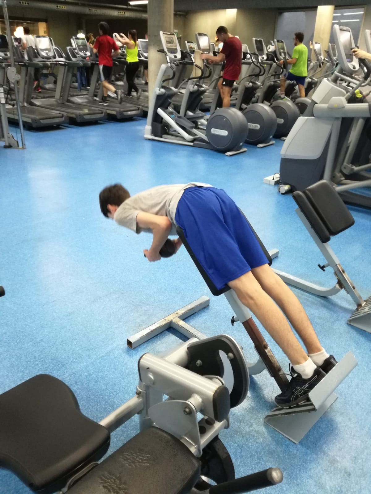

Being my first month, it was some what embarassing to go there considering how skinny I was. One of the things I enjoyed the most was the feeling that you would get after going to the gym.
Althought my progression wasn't that much, I had put on a couple of kilograms. Since my main objective with going to the gym was maintaining my shape that I had before getting injured through figure skating, I was happy with my progress. However, due to the holidays some loss in weight was noticeable. As a result, going to the gym, even if it is for 20 minutes, is sure worth is as making mussle is a lot harder than losing it.
During this month, I've gone to the gym a total of 6 times. The first day was January 15th, which is the reason I've lost a bit of weight.

Due to the accumulation of work I've gone to the gym a lot more unconsistently. As a result, my progress has been negligible. This shows the impotance of commitment and percervance that I haven't applied to the gym but I have applied to figure skating.
During this month, I've gone to the gym a total of 8 times.